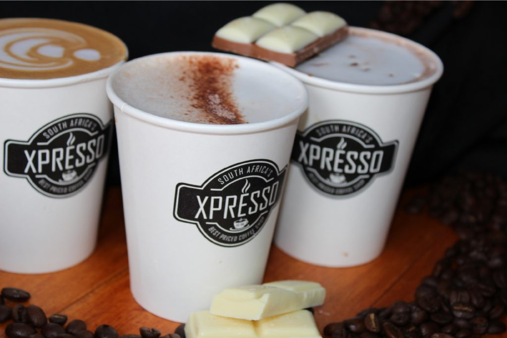

XPRESSO CAFE
Espresso Cafe typically refers to a type of coffee shop or café that specializes in espresso-based drinks. These cafés often offer a variety of espresso beverages like lattes, cappuccinos, macchiatos, and Americanos, along with other coffee-related options. The focus is usually on high-quality espresso and well-crafted coffee drinks, and they might also serve pastries, sandwiches, and other light fare.
Where can the pizza palace be found?
At the food court
MENU